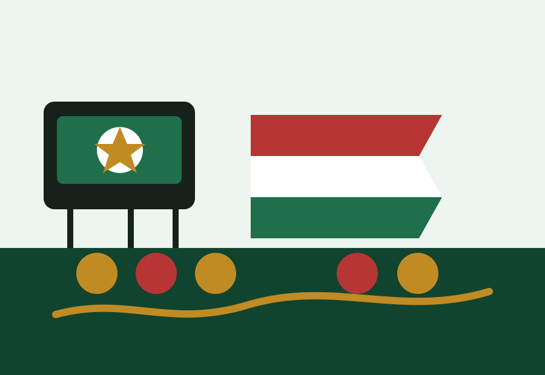

Spain fans
Spain fans World Cup 2026 travel guide
Spain fans are a strong audience for both English and Spanish content: predictions, routes, hotels, fan zones and practical insurance questions all connect.
Best content path for Spain fans
- Start with Spanish prediction and travel impact pages.
- Choose a route cluster around likely match cities.
- Compare hotels before knockout demand rises.
- Keep no-ticket fan-zone options ready.
Planning table
| Need | Page | Why |
|---|---|---|
| Spanish route planning | Rutas Mundial 2026 | Language match. |
| Hotel planning | Hoteles Mundial 2026 | High buyer intent. |
| Prediction angle | Spain travel impact | Team demand bridge. |
| No-ticket plan | Fan zone hub | Useful backup. |